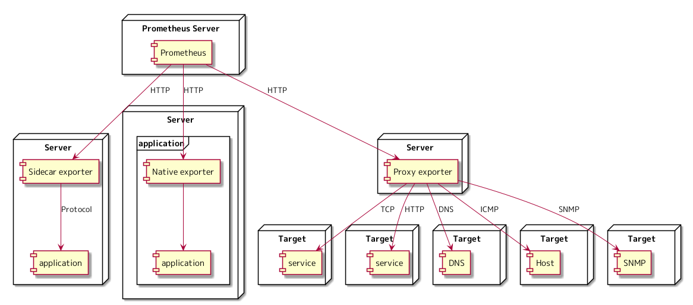

さくらインターネット Advent Calendar 2021 12日目の記事になります。
Prometheus を使うと何がうれしいのか自分なりに考えてみた にて、 Prometheus ではどのようなモニタリングを実現でき、従来のモニタリングの仕組みと比べてのうれしい部分について考えてみました。
Prometheus では、 Exporter を使い対象のメトリクスを取得するということを説明しました。 Exporter がどのようなものであるかを説明したあと、 すぐに ○○ Exporter の使い方というような流れであったり、 特定の Exporter の使い方という記事はよく見掛けます。
対象のメトリクスを取得するために、 どのような Exporter の構成があるのかを説明した記事は見掛けたことが無く、 Prometheus と Exporter の結び付きをイメージするためには必要なのではないかと常日頃から思っていたので、 そこに対する自分の考えを書いてみます。
Exporter の構成
対象のメトリクスを取得するためにとる Exporter の構成は、下記の3つになるのではないかと考えています。 Sidecar exporter, Native exporter, Proxy exporter という名前は、 説明のために、私が作ったものであり、 Prometheus で使われている一般的な用語ではありません。 Prometheus でメトリクスを管理するためには、 Prometheus の保存できる形式でメトリクスを生成し、 HTTP のエンドポイントを公開することが必須であるという前提のもと、 これらについて、どのような構成をとり、どう考え名前を付けたのかについて説明します。

Native exporter
Apache のメトリクスを Prometheus で管理したいとなったときに、 Apache 自体は、 Exporter を持っていないため、 そのままでは、 Apache のメトリクスを Prometheus で管理できません。
Prometheus が保存できる形式でメトリクスを返すことができる機能を、 ソフトウェア自体に組み込んでいる Exporter を Native exporter と呼んでみました。
これに当てはめると Nomad, Consul などは、 Exporter を持っており Native exporter に該当します。
- https://www.nomadproject.io/docs/operations/monitoring-nomad
- https://www.consul.io/docs/k8s/connect/observability/metrics
Sidecar exporter
対象のソフトウェアが Native exporter でない場合は、 対象のメトリクスを収集し、 Prometheus が保存できる形式のメトリクスに変換する Exporter が必要になってきます。 例えば、 Apache は、 Native exporter を持っていないため、 Apache のメトリクスを収集し、 Prometheus が保存できる形式のメトリクスに変換する Exporter が必要になります。
Apache exporter を使うことで、 Apache のメトリクスを Prometheus が保存できる形式に変換することで、 Prometheus で Apache のメトリクスを管理できるようになります。
https://github.com/Lusitaniae/apache_exporter
Node exporter を使うことで、サーバーのメトリクスを Prometheus が保存できる形式のに変換することで、 Prometheus で、サーバーのメトリクスを管理できるようになります。
https://github.com/prometheus/node_exporter
コンテナのデザインパターンである「サイドカー・パターン」から発想を得て、 Sidecar exporter と呼んでみました。
アプリケーショによって Exporter がメトリクスを収集するための Protocol が、 proc filesystem かもしれないし、 systemd かもしれないし、 gRPC かもしれないし、 HTTP かもしれないし、その他の Protocol かもしれないため、図には protocol と書きました。
Proxy exporter
サーバー、アプリケーションのメトリクスだけでなく、 HTTP, TCP, ICMP など対象の外形をメトリクスとして取得したい場合や、 ネットワーク機器、アプライアンスなど Exporter をセットアップできない対象では、 その対象が扱うプロトコルを Prometheus で保存できるメトリクスに変換する Exporter が必要になります。
どの対象に対して、どのようなメトリクスを取得するのかを、 GET リクエストのパラメータに含めるところが、 Proxy exporter の特徴となっています。 下記は、 192.168.2.100 の対象に対して ICMP のメトリクスを取得したいときのリクエストの例になります。
$ curl http://192.168.2.10:9115/probe?module=icmp&target=192.168.2.100
HTTP, TCP, ICMP などで対象の外形をメトリクスとして取得したい場合は、 Blackbox exporter という Exporter を使います。
https://github.com/prometheus/blackbox_exporter
ネットワーク機器、アプライアンスでは、 Exporter はセットアップできませんが、 SNMP は使えるのではないでしょうか。 SNMP exporter を使うと SNMP を Prometheus で保存できるメトリクスに変換できます。
https://github.com/prometheus/snmp_exporter
対象への代理で応答する Exporter であることから、 Proxy exporter と呼んでみました。
Exporter を一覧できるサイト
Prometheus の公式ドキュメントに Exporter を一覧できるページがあります。 今回の内容をもとに、リンク先の Exporter を眺めてみて、 どのような構成をとる Exporter であるかを考えてみてもらえたらと思います。